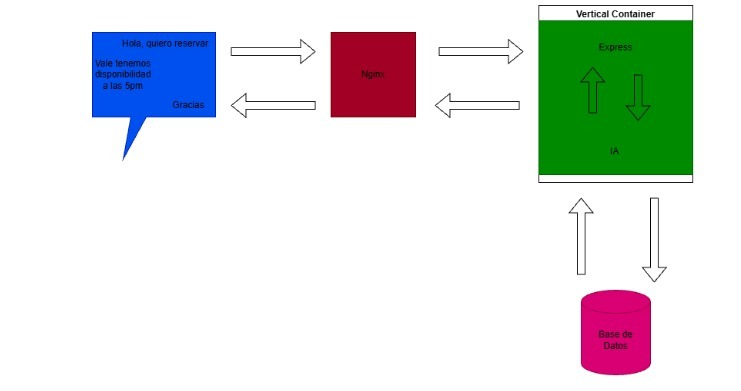
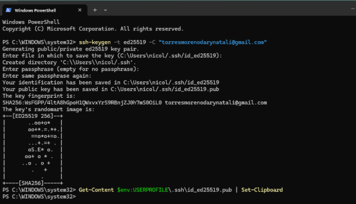
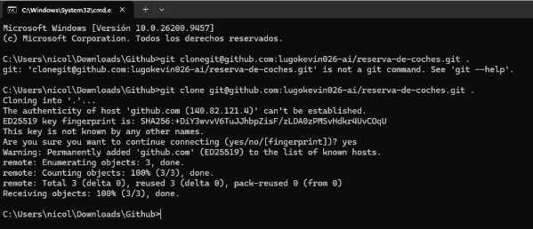
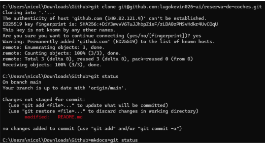

Ford Fiesta
Urbano y económico. 5 plazas.
8 € / hora
Alquiler de coches por horas. Elige fecha, hora y duración, y reserva en minutos con nuestro asistente virtual.
Reservar ahoraHablar con el asistente
Gestionar reservas de coches de forma rápida y organizada es difícil: el cliente necesita saber qué vehículos están libres, elegir la recogida y la duración, y a veces modificar la reserva sin que se compruebe la disponibilidad. Por eso creamos un sistema de reservas con asistente virtual.
Ejemplo: Carlos · 29/09/2026 · 10:00 · 4 horas · Ford Fiesta · juan@gmail.com · Tel. 600000000

Una muestra de los coches que puedes reservar. El asistente te dirá cuáles están libres en tu fecha y hora.
Urbano y económico. 5 plazas.
8 € / hora
Compacto cómodo para carretera. 5 plazas.
11 € / hora
SUV híbrido, bajo consumo. 5 plazas.
14 € / hora
Furgoneta premium para grupos. 7 plazas.
22 € / hora
Modelos y precios ficticios, proyecto de clase.
¡Hola! Soy el asistente de KYNIC. ¿Qué día y a qué hora quieres recoger el coche, y por cuántas horas lo usarás?
Datos ficticios, proyecto de clase.
Sí. Puedes modificar la recogida o cambiar de coche, siempre que haya disponibilidad.
Pasado el día de entrega se cobra una penalización de 30 a 40 €.
Después de confirmar la reserva con el asistente.
Se cobran en el momento de la entrega.
GitHub almacena repositorios de Git en Internet y permite trabajar en equipo. Usamos el repositorio reserva-de-coches con conexión SSH, que nos deja conectarnos de forma segura sin escribir la contraseña cada vez.
Creamos una clave en el ordenador y la añadimos a la cuenta de GitHub. Después podemos clonar, subir y descargar proyectos.



echo "# reserva-de-coches" >> README.md crea el archivo que explica el proyecto.git init convierte la carpeta en repositorio local (crea la carpeta oculta .git).git add . los añade al área de preparación (staging area).git commit -m "first commit" guarda una versión del proyecto con un mensaje.git branch -M main renombra la rama actual a main.git remote add origin git@github.com:lugokevin026-ai/reserva-de-coches.gitgit push -u origin main; con -u, los siguientes envíos solo necesitan git push.cd "C:\Users\Kevin\Desktop\reserva-de-coches"
git init
git add .
git commit -m "first commit"
git branch -M main
git remote add origin git@github.com:lugokevin026-ai/reserva-de-coches.git
git push -u origin mainNo hace falta repetir init, add ni commit:
git remote add origin git@github.com:lugokevin026-ai/reserva-de-coches.git
git branch -M main
git push -u origin maingit add .
git commit -m "descripción del cambio"
git pushEs el archivo principal de MkDocs: define el nombre de la web, el tema visual (windmill-dark), el logotipo y las páginas del menú. Añadimos la página Configuración web a la navegación y activamos extensiones de Markdown para avisos y contenido desplegable.
Define un flujo de GitHub Actions que se ejecuta al publicar cambios en la rama main: descarga el repositorio, prepara Python, instala el tema, construye la web y publica los archivos en GitHub Pages. Añadimos el nombre «Construir la web» al paso de mkdocs build para identificarlo en los registros.
Amplían las funciones de MkDocs. Usamos windmill-dark como tema y extensiones de Markdown para mejorar la presentación.
mkdocs.yml controla la configuración y la navegación; deploy.yml automatiza la construcción y publicación. Así actualizamos la documentación sin hacer el proceso a mano.